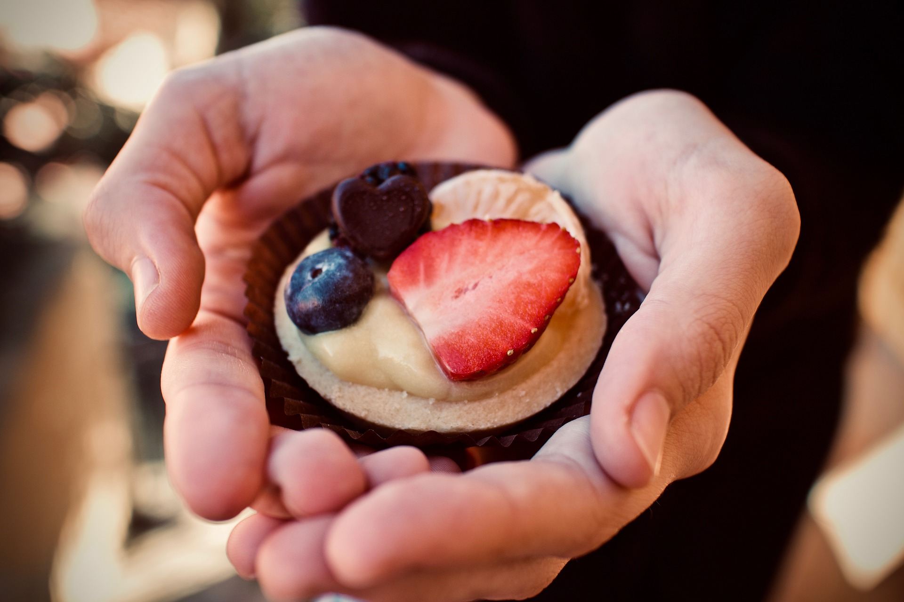

About Us
Back in 2009 when I was first diagnosed with Celiac, there were very few sweets available to me in the stores.
Thankfully I had always enjoyed baking, and with some practice and patience was able to adjust my recipes to accomidate my needs.
Since then I have crafted new recipes, and have decided to share them with my community by opening my own bakery.
All of our products are crafted in a dedicated kitchen with dedicated ingredients—there is no risk of cross–contamination!
For more information about gluten free living, visit celiac.org.
If you would like us to cater for a special event, just send us a message by filling out the form here.
News
Upcoming Items
Specials desserts for Cinco de Mayo, available all throughout the month of May!
New Location
New building acquired in downtown Orlando. Expect us to open our doors by the end of the year!